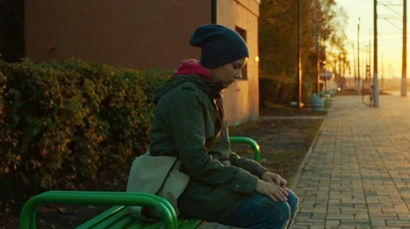
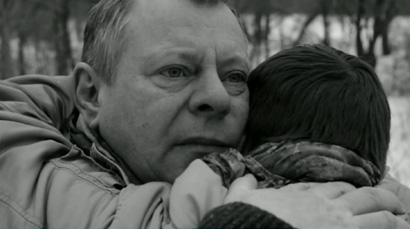
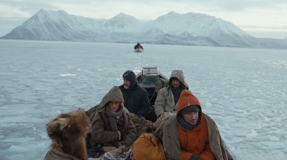
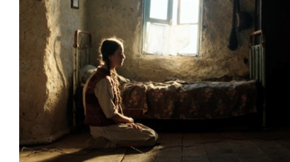
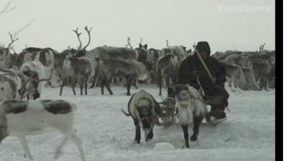

Международный Шукшинский кинофестиваль
22-28 июля 2015
Архив
26 июля на горе Пикет в Сростках в рамках заключительной художественно-публицистической программы объявлены победители Шукшинского кинофестиваля. Специальным дипломом «За художественное отображение межнациональных отношений» отмечен фильм «Ба-Бу» режиссера Виктора Бондаровича (Беларусь). Картине «Меня это не касается» режиссера Александра Новопашина (Новосибирск) присужден специальный диплом «За лучшее раскрытие важной социальной темы». Диплома Шукшинского кинофестиваля «За лучшую мужскую роль» удостоен народный артист России Сергей Безруков, «За лучшую женскую роль» - Ирина Скобцева (фильм «Золото»).
Главный приз фестиваля документального и студенческого кино за фильм «Здравствуй, папа. Роман о Ролане» вручен режиссеру Ролану Сергиенко – герою фильма и отцу ушедшего из жизни режиссера картины Алексея Сергиенко.
Участники
-

Я не вернусь
- Режиссер Ильмар Рааг
- Жанр Драма
- В ролях Полина Пушкарук, Вика Лобачева, Андрей Астраханцев и др.
-

Сын
- Режиссер Арсений Гончуков
- Жанр Драма
- В ролях Алексей Черных, Вадим Андреев, Ольга Малахова и др.
-

Территория
- Режиссер Александр Мельник
- Жанр Драма, приключения
- В ролях Константин Лавроненко, Григорий Добрыгин, Егор Бероев и др.
-

Испытание
- Режиссер Александр Котт
- Жанр Драма
- В ролях Елена Ан, Данила Рассомахин, Карим Пакачаков и др.
-

Дорога на Берлин
- Режиссер Сергей Попов
- Жанр Военная драма
- В ролях Юрий Борисов, Амир Абдыкалыков, Максим Демченко и др.
-

Белый ягель
- Режиссер Владимир Тумаев
- Жанр Драма, мелодрама
- В ролях Евгений Сангаджиев, Галина Тихонова, Ирина Михайлова и др.